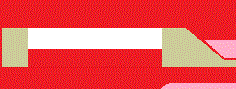

|  |
Ciekawe miejsca na świecie |
|
WitajCiekawe miejsce w Polsce
Polska Sahara - Łeba, wydmy.Największy pas ruchomych wydm w Europie znajduje się w Słowińskim Parku Narodowym w okolicach Łeby. Jest to unikatowe zjawisko przyrodnicze. Wydmy osiągają 30-40 metrów, a ich prędkość przemieszczania może wynosić nawet 10 m na rok. Przesuwają się za sprawą wiatru, który przesypuje ziarenka piasku z wierzchołków wzniesień. Najwyższa z nich – Łącka Góra ma ponad 40 metrów, a przebywając na jej szczycie można się poczuć jak na prawdziwej pustyni. Zwiedzenie „Polskiej Sahary” jest obowiązkowym punktem na trasie turystów przebywających w Łebie. © Strona została stworzona przez Mateusza Stanikowskiego |